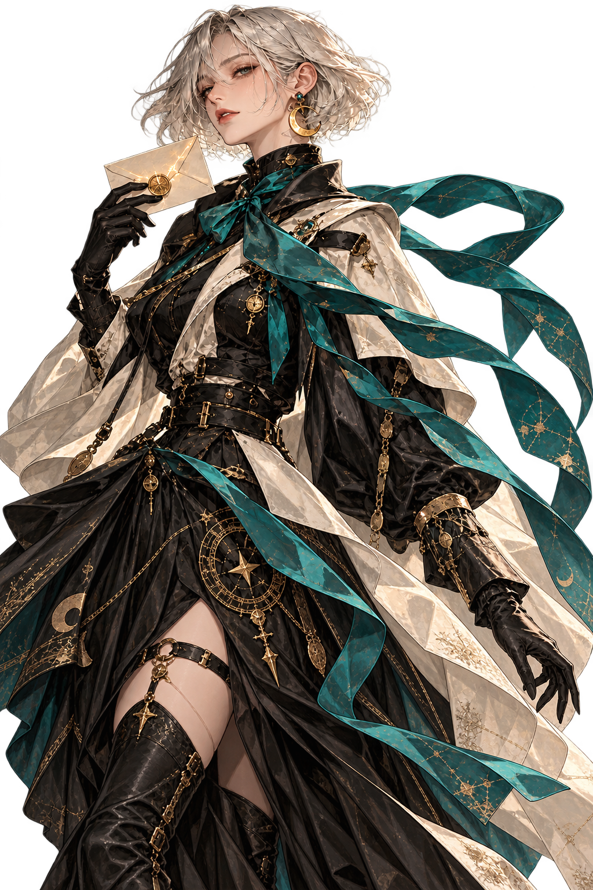

編成室
該当する配達人はいません。

合計 7 / 9
名簿のカードを選ぶと、人物と能力が切り替わります。属性・名前・称号で絞り込めます。
3枠から配置先を選び、「配置先と比較」で現在のカードと数値を比べられます。空き枠には比較対象がありません。
同じカードは重複できません。同じ人物の別の称号は編成できます。配置はすぐ反映され、演出中も次の操作ができます。
配置済みの枠は入れ替え・解除できます。このデモは保存・戦闘を行わず、再読込で初期状態へ戻ります。
端末側の動き軽減設定も適用します。Tabで移動し、Enter・Spaceで操作、Escapeで閉じられます。
合計コスト / 9
UIデモの結果です。戦闘・保存は行いません。